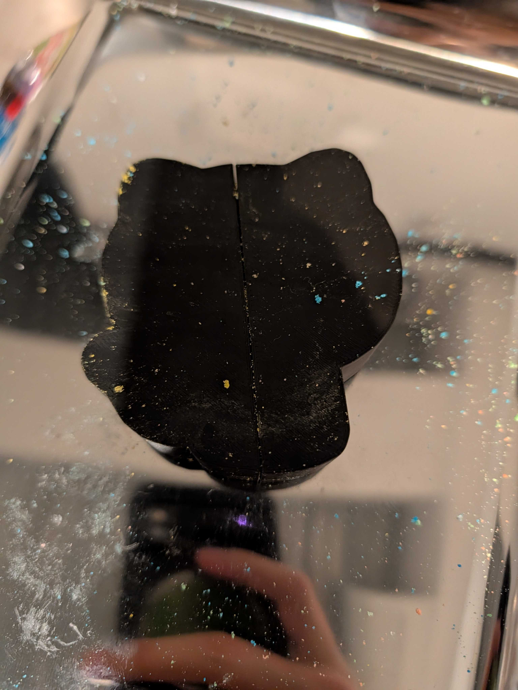
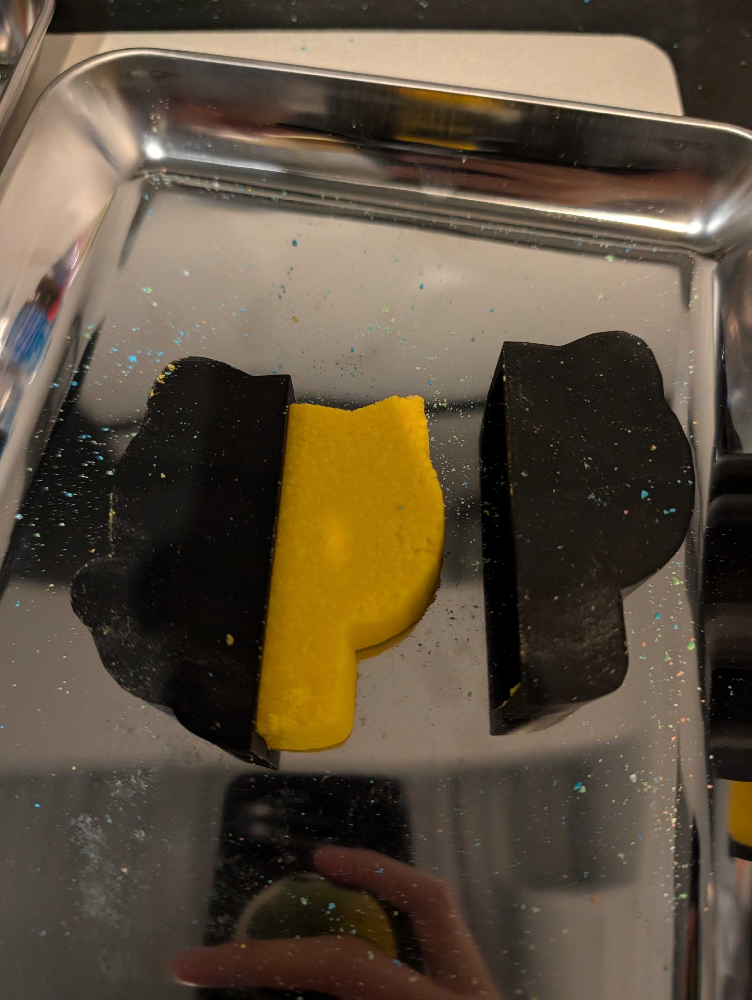
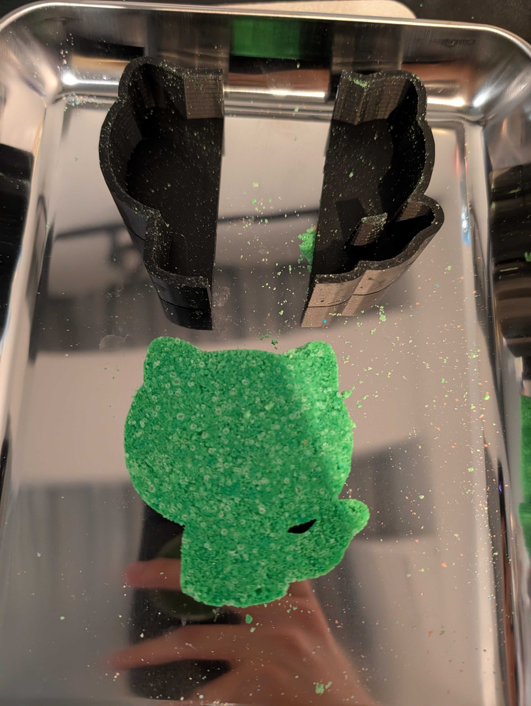
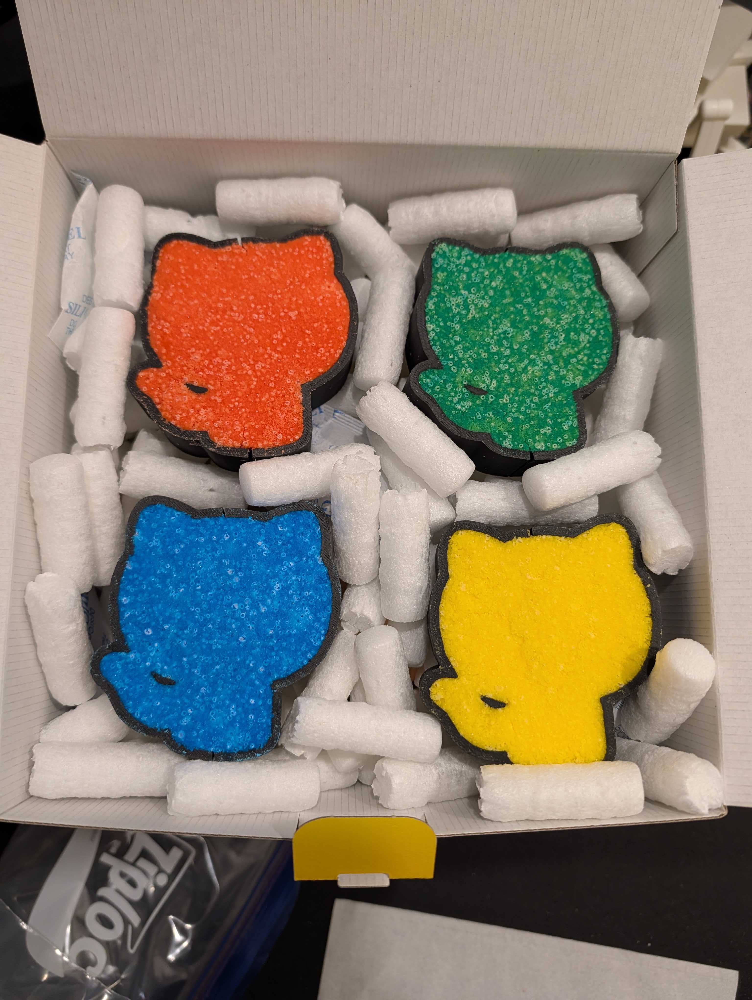
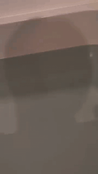
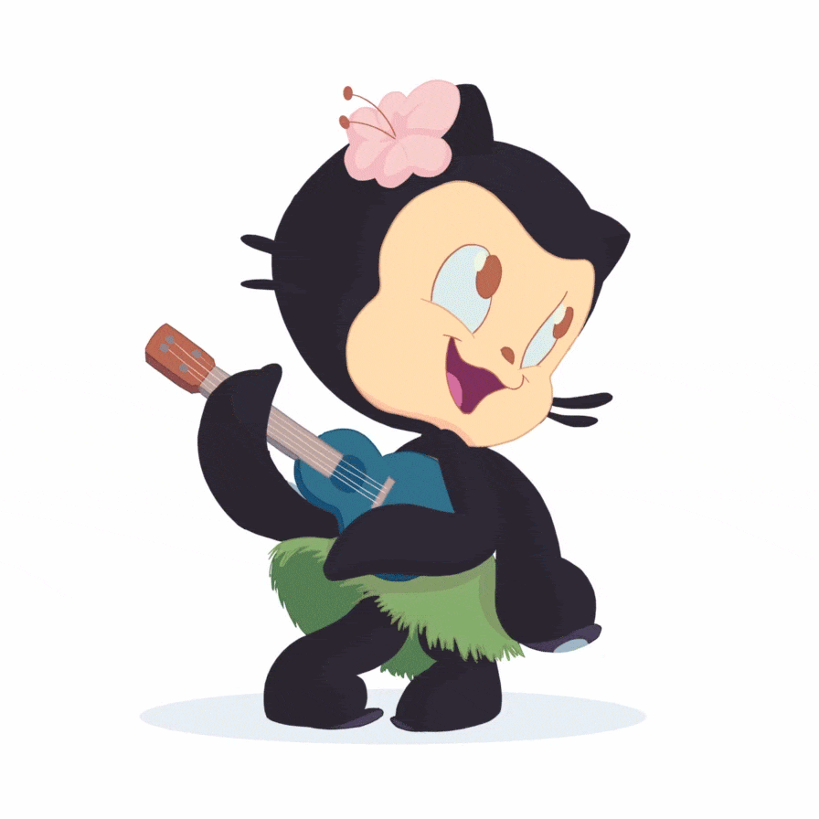

This is the official guide to cleanly demolding an Octocat-shaped bath bomb made with a 3D-printed mold.
It is based on real-world experience from Trial 02 of the
copilot-cli-bathbomb-experiment repository.

↑ Bombacat — your spirit animal for this guide. (from octodex)
What you'll learn
- The 2 things you must never do during demolding
- The correct procedure for releasing one half cleanly
- Why not fully demolding is actually the recommended option
- How to salvage the bath bomb if it crumbles anyway
Who this is for
- People who have just finished pressing an Octocat-shaped bath bomb
- People about to enter the demolding step
- People planning to give one as a gift
Required
- ✅ A finished Octocat bath bomb still in its 3D-printed mold (clamped with rubber bands, dried for at least 12–24 hours)
- ✅ A flat desk
- ✅ Calm hands (impatience is your enemy)
Nice to have
- 🛁 Someone who wants a bath + an actual bath (for using right after demolding, or for testing failures)
- 📦 A Ziploc bag or airtight container (for storage / transport)

↑ State before drying. This is the starting line.
Before starting, memorize the two actions you must absolutely avoid. Just by avoiding these, you're already halfway to success.

Boxertocat says: this is NOT the time for boxing moves. No yanking, no jabs, no sideways shoves. Channel a tea ceremony, not a title fight.
NG #1: yanking the two halves apart in one motion
It's tempting to pop it open in one satisfying motion, but the Octocat's fine details cannot withstand the brittleness of bath bomb material. They will almost certainly break.
NG #2: sliding the mold sideways
Sliding sideways causes the Octocat's raised features to drag against the mold's inner walls, scraping the surface or snapping pieces off.
NG #3 (bonus): impatient brute force
The most common failure mode. You think "it should be dry by now" and apply force — but uneven internal moisture causes it to crack.
Now that you know the NGs, here are the 4 correct steps for releasing one half.
Step 1: place the back of the mold flat on the desk
Put the mold so the face side (deeper details) faces up, and the back (flat side) sits on the desk.
Step 2: firmly hold down the arm-side half
With your non-dominant hand, press the half that has the Octocat's arm details flat against the desk. Lock it in place.
Step 3: lift the OTHER half straight up, slowly
Lift only along the true vertical axis. Even a small angled component will lift the bath bomb you tried to keep down in Step 2 right out of the held mold half.
Step 4: follow the natural face/arm gap
The Octocat has a natural notch (sculptural recess) between the face and the arms. Trace this gap as you lift to minimize friction and snags.

↑ Mid-Step 3. The moment one half releases.
Successful release

Here's the part this guide most strongly recommends. You released one half in the previous step — but you should leave the other mold half attached.

Yogitocat teaches: letting go includes letting go of the desire to remove the second mold half. The wisest demolder removes only what must be removed.
Why partial demolding is better
- 🎯 The second mold half is a difficulty spike. Some people fail it almost every time (next step covers why).
- 🛁 You already have plenty of surface area for the fizz reaction. With one half off, more than half the bath bomb's surface is exposed, so when dropped in the bath it fizzes perfectly. Proof video here.
- 📦 Zero breakage risk during transport / hand-off. When gifting, the remaining mold half acts as a protective shell.
- ✨ It actually looks cooler. Detailed below.
Aesthetics: why "mold-on" looks better — the Dragon Shading effect
The mold edge frames the Octocat's silhouette with a sharp, defined outline. This produces a visual effect very similar to Dragon Shading — a cel/toon-shading technique that adds bold black outlines to 3D animated characters.
A famous comparison:
- Dragon Ball Z (PS2) — standard 3D shading, no outlines
- Dragon Ball Z2 (PS2) — characters gained black outlines, instantly making them look more anime-faithful and dramatic

↑ The actual gift. All four were boxed with one mold half still attached.
"No, I really want to see the complete Octocat figure" — this advanced step is for you. Proceed knowing the failure risk.

Surftocat warns: this is the part where you ride the wave. Some days you stick the landing, some days you wipe out. Both are part of the experience.
The base technique is the same
Releasing the remaining mold half follows the same rules as before:
- Press the side opposite the half you want to remove firmly against the desk (this time you're directly pressing the bath bomb itself — be extra careful)
- Lift the half you want to remove straight up, slowly
- Trace the face/arm gap on the way out
Extra tips
- 🪶 Use less than half the pressure of the previous step. Because you're holding the bath bomb directly, too much pressure from the holding hand will dent the body.
- 🔄 Don't lift in one motion. Go 1 mm at a time, observe, repeat.
- 🌡️ Lower room temperatures make bath bombs more brittle. Work at room temperature when possible.
If it fails — don't blame yourself
Honestly, this is a domain of practice and luck. Some people nail it on attempt #1, others fail three in a row. If it crumbles, the bath bomb is still chemically intact — see the next step.
Demolding failed and your Octocat is in pieces — don't throw it away.
The chemistry doesn't care about shape
The "fizz" of a bath bomb is the classic acid-base reaction sodium bicarbonate + citric acid + water → carbon dioxide. This reaction has nothing to do with shape. As long as it ends up in the bath, it will fizz properly.
We tested it
Here's the recording: a crumbled prototype dropped in a bath, to verify it still fizzes correctly.

↑ Result: visually broken, chemically perfect ✨
Great job! Your Octocat bath bomb demolding is complete.

↑ Hulatocat celebrates with you. (from octodex)
Recap
- 🚨 Never "yank apart vertically", never "slide sideways"
- ✅ Back-down → fix the arm side → lift the other side straight up, slowly
- 💡 Don't bother fully demolding — gift it mold-and-all: safer AND cooler-looking
- 🔬 Even if it crumbles, the bath bomb works perfectly (use it yourself)
Related resources
- 📦 Project repository (GitHub)
- 🐱 Trial 02 success log (recipe, color palette, gift composition)
- 💥 Trial 01 failure log (the reason this guide exists)
- 📐 STL preview & download
- 🐙 GitHub Octodex (where the Octocats in this guide came from)
Feedback
"This procedure worked / didn't work for me", "here's another tip" — any observations are welcome on GitHub Issues.
Made with 🛁 + 🐱 + GitHub Copilot CLI